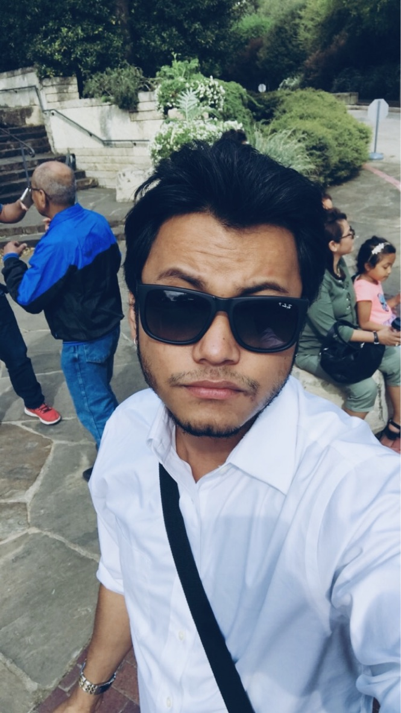

I'm back and I'm here to stay
Anand Chaudhary


I got into programming in the june 2019 and completed the six month course by the end of november 2019. However due to lack of oppurtunity and financial crisis I sort of lost touch with the programming and I thought that I should get back at it as soon as I can before I loose touch with it and forget everything I've learnt. Therefore, from this point on I'm trying to get back at it and I will do so everyday and continue to learn a little bit every day beacause I love doing this and this is my place. I wish not to step away from the code again. I wish to continue this exciting journey of programming all over again. Here's a bare minimim of me trying to warm up, so please bare with me.
Computer is my favourite thing in this world and I don't think I can survive a day without spending few hours on it. It's wierd but I think I'm in love with it. It keeps me company when I'm alone, it quenches my thirst for knowledge, it lets me create new things, helps me make money and most importantly it's my window to the world.
📞 - (773)-499-2259
- Email: anand92490@gmail.com
- Gitbub: https://github.com/anand92490
- Portfolio: https://anand92490.github.io/AnandPortfolio/